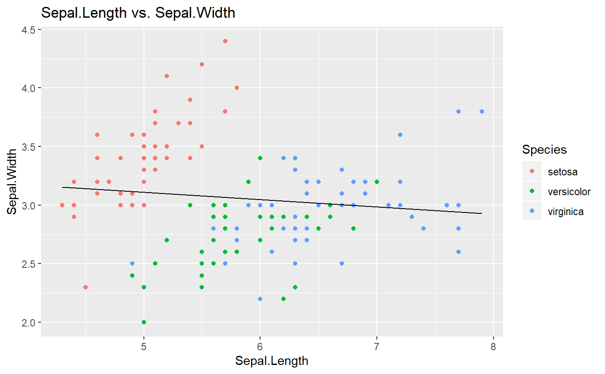

rl_same_line.Rdrl_same_line(data, x, y, cat, ...) creates a ggplot (or plotly) object. It is designed to create visualizations of linear models with one LSRL. Inserting a datatable, x variable, y variable, and categorical variable will produce a graph with 1 LSRL. You can modify the graph by changing the values for various parameters.
rl_same_line(data, x, y, cat, plotly = FALSE, ci = FALSE, pi = FALSE, interactive = FALSE, title = paste(x, "vs.", y), xlabel = x, ylabel = y, legendTitle = cat, level = 0.95)
| data | a R data frame. tibbles will work |
|---|---|
| x | variable name of the x (predicting) variable, must be a column name in the data table |
| y | variable name of the y (response) variable, must be a column name in the data table |
| cat | variable name of the categorical variable, must be a column name in the data table |
| plotly | boolean if they want the graph in plotly. TRUE returns plotly graph, FALSE returns ggplot. Set to FALSE |
| ci | boolean to add a confidence interval to the graph. Set to FALSE |
| pi | boolean to add a prediction interval to the graph. Set to FALSE |
| interactive | boolean to make interactive. Set to FALSE |
| title | a string to change the title of the graph. Set to x name vs y name |
| xlabel | a string for the label of the x axis. Set to the x variable name |
| ylabel | a string for the label of the y axis. Set to the y variable name |
| legendTitle | a string for the label of the legend. Set to the categorical variable name |
| level | a number between 0-1 for the interval percentage of the confidence and prediction intervals. Set to .95 |
a ggplot or plotly object
rl_same_line(iris, Sepal.Length, Sepal.Width, Species)#> #> Call: #> lm(formula = newy ~ newx, data = data) #> #> Coefficients: #> (Intercept) newx #> 3.41895 -0.06188 #>